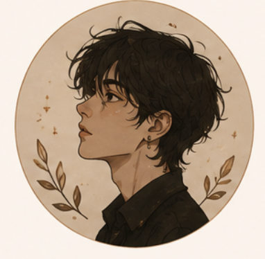

Алиса
Третья концовка стоит того, чтобы пройти заново. Кафе и парк читаются по-разному, но оба пути цепляют — особенно сцена у окна, когда Алекс молчит дольше, чем нужно.
 Глава 5. Признание
Глава 5. Признание
 0глав
0глав 0сцен
0сцен 0персонажей
0персонажейещё не сохранялась

Третья концовка стоит того, чтобы пройти заново. Кафе и парк читаются по-разному, но оба пути цепляют — особенно сцена у окна, когда Алекс молчит дольше, чем нужно.
Глава 5. Признание
Кафе или парк — всё равно возвращаюсь к прологу. Хочется увидеть ветку с Никитой раньше, а не только намёками в письмах.
Глава 2. Ветки

Перекрёсток держит. Правда одна, пути разные — это чувствуется уже с первой сцены, и из-за этого хочется перечитывать выборы.
Глава 1. Перекрёсток
Для интерактивной истории шкала ветвится: это время мира, а не порядок чтения.
Хронология помогает вам держать события истории в правильном порядке. Она нужна для планирования сюжета и не влияет на порядок публикации сцен.
Важно: хронология — это рабочий инструмент автора. Читатели её не видят.
Хронология помогает вам видеть все возможные пути развития истории и понимать, как события связаны между собой.
Важно: хронология — это рабочий инструмент автора. Читатели её не видят.


Здесь можно хранить идеи, важные детали, цитаты и всё, что помогает работать над историей. Заметки видите только вы.
Создана 12.05.2024
Создана 18.05.2024
Создана 03.06.2024
Создана 21.06.2024
Подробная статистика по вашей работе и её читателям.

Просмотры
18 742 ↑ 24,6%
Уникальные посетители
7 945 ↑ 18,3%
Прочтения глав
12 581 ↑ 27,1%
Лайки
1 263 ↑ 15,7%
Комментарии
342 ↑ 31,4%Процент читателей, дошедших до определённого этапа
Всего загрузок
2 856 ↑ 21,3%Уникальные читатели
1 562 ↑ 16,8%| Период | Просмотры | Уникальные | Прочтения глав | Лайки | Комментарии | Офлайн |
|---|---|---|---|---|---|---|
| 27 мая — 24 авг. 2026 | 18 742 ↑ 24,6% | 7 945 ↑ 18,3% | 12 581 ↑ 27,1% | 1 263 ↑ 15,7% | 342 ↑ 31,4% | 2 856 ↑ 21,3% |
| 28 фев. — 26 мая 2026 | 15 042 ↑ 8,2% | 6 716 ↑ 6,4% | 9 898 ↑ 9,1% | 1 092 ↑ 5,8% | 260 ↑ 7,0% | 2 354 ↑ 7,4% |
| 1 дек. 2025 — 27 фев. 2026 | 13 902 | 6 312 | 9 073 | 1 032 | 243 | 2 192 |